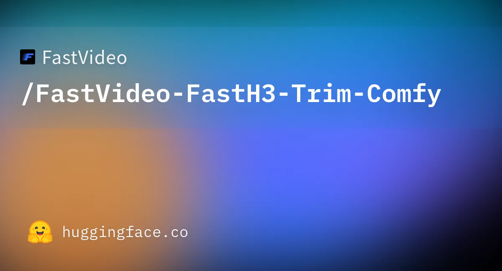

影片＋音訊生成2 則更新
MiniMax H3
社群加速版大量出現，單張 RTX 5090 就能跑
- 2026-10-06
FastH3 V2 消費級顯卡版＋FastH3 Trim

圖片來源：Hugging Face · FastVideo UC San Diego Hao AI Lab（FastVideo 團隊）把 8 步蒸餾的 FastH3 V2 帶到單張 RTX 5090／4090、RTX PRO 6000、DGX Spark 和 Apple Silicon Mac，提供 NVFP4、FP8 和 MLX 量化版本。另有實驗性剪枝版 FastH3 Trim，把 50 個 block 剪到 42 個，比原版 H3 小 4.2 倍，最低 8GB 顯存就能跑。在 RTX 5090 上生成 5 秒 832×480 含音訊影片約 13.4 秒（Trim 版）。ComfyUI 單檔權重已上 Hugging Face。
- 2026-10-03
Veda Sparse Attention 官方 ComfyUI 節點
圖片來源：ComfyUI Wiki（Veda 專案示例） ByteDance、香港大學和中國科大的 Veda（ICML 2026）推出官方 ComfyUI 節點。它用蒸餾出來的稀疏預測器，只計算約 10% 的 attention tile，不改模型權重，也相容 LoRA。在 RTX 5070 上生成 1344×768、5.2 秒的影片，端到端約快 2.9 倍，attention 部分約快 7.1 倍。需要 ComfyUI 0.38 以上；預測器（275MB）目前是 preview 版，不要和 Model Sparse Attention 疊用。